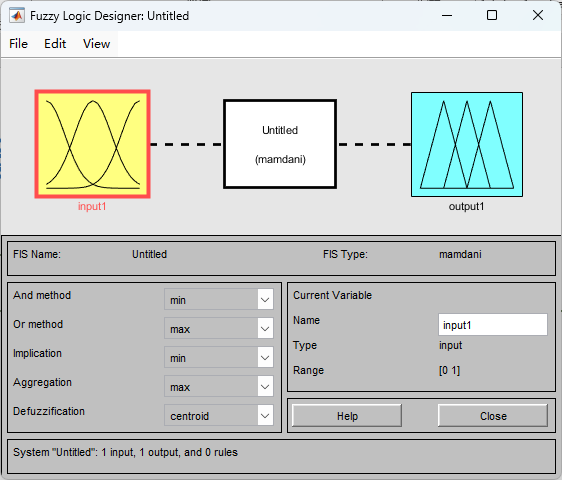
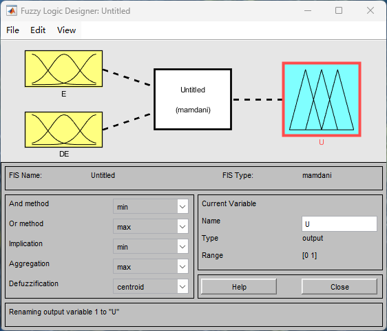
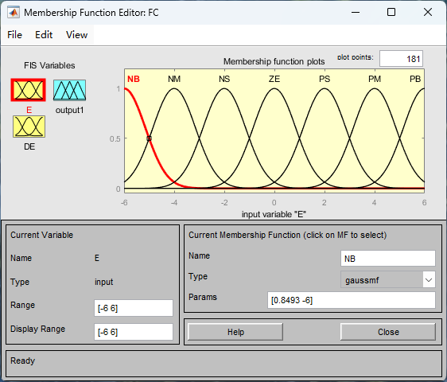
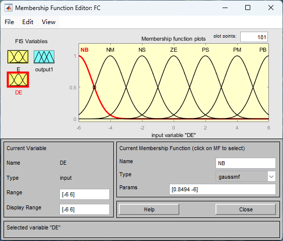
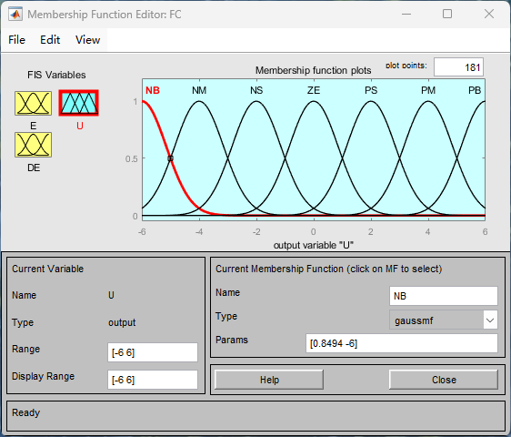
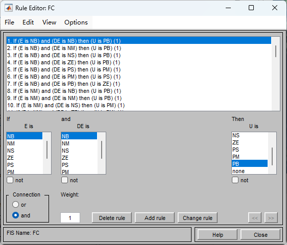
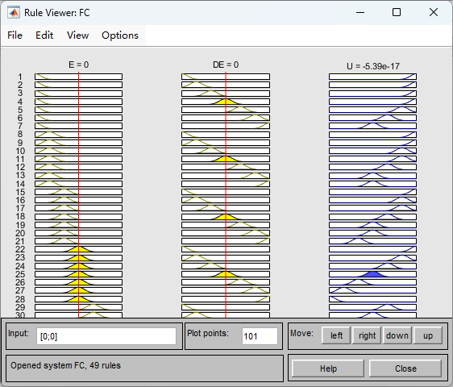
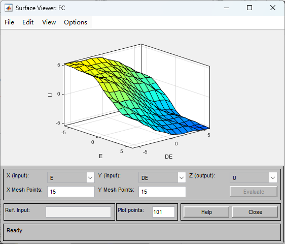
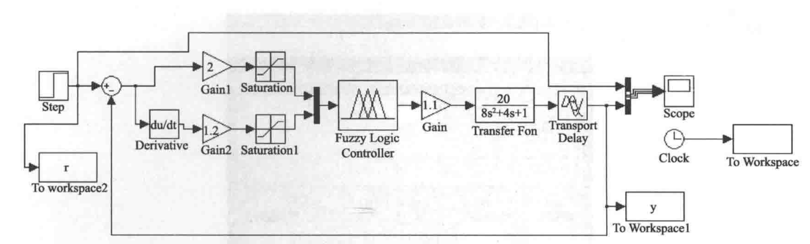
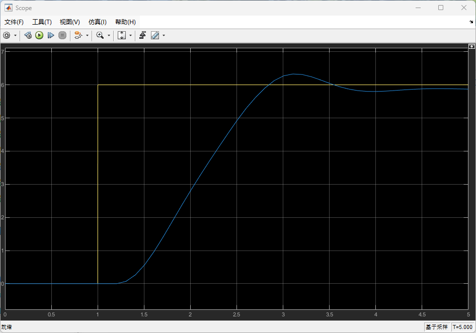

实验对象
已知一个二阶系统的传递函数为
设计模糊控制器，使其具有良好的动态控制性能。
模糊控制系统通常由模糊控制器、输入输出接口、执行机构、被控对象和测量装置等五个部分组成。
模糊控制器的设计原则：
系统：单输入单输出（SISO），被控对象仍为 $$G(s)=\frac{20}{8s^{2}+4s+1}\,e^{-0.2s}$$
模糊控制器：
语言变量：
论域：输入误差 $e$、误差变化率 $de$、控制量 $u$——均为 $[-6,6]$。
| 语言值集合 | NB | NM | NS | ZE | PS | PM | PB |
|---|---|---|---|---|---|---|---|
| 含义 | 负大 | 负中 | 负小 | 零 | 正小 | 正中 | 正大 |
| 隶属度函数 | 三角形函数或正态形函数 | ||||||
| 函数中心 | −6 | −4 | −2 | 0 | 2 | 4 | 6 |
控制规则形如 If (E is NB) and (DE is NB) then (U is PB)，共 $7\times 7=49$ 条，汇总为模糊控制规则表：
| $E$ \ $DE$ | NB | NM | NS | ZE | PS | PM | PB |
|---|---|---|---|---|---|---|---|
| NB | PB | PB | PB | PB | PM | PS | ZE |
| NM | PB | PB | PM | PM | PS | ZE | ZE |
| NS | PB | PM | PM | PS | ZE | ZE | NS |
| ZE | PB | PM | PS | ZE | NS | NM | NB |
| PS | PS | ZE | ZE | NS | NM | NM | NB |
| PM | ZE | ZE | NS | NM | NM | NB | NB |
| PB | ZE | NS | NM | NB | NB | NB | NB |
启动 Fuzzy Logic Designer
在 MATLAB 命令行窗口输入 >> fuzzy，回车后打开模糊系统编辑器（Fuzzy Logic Designer），默认生成一个单输入单输出的 Mamdani 系统（Untitled）。

双输入单输出 Mamdani 结构
通过 Edit → Add Variable → Input 增加一个输入，构成 两输入（E、DE）单输出（U）结构；FIS 类型选 mamdani。推理与精确化参数取默认值：

E / DE / U 三个变量均设 7 个高斯隶属函数
双击变量图标进入 Membership Function Editor。将变量名分别改为 E、DE、U，Range 与 Display Range 均设为 [-6 6]；每个变量设置 NB、NM、NS、ZE、PS、PM、PB 共 7 个隶属函数，类型取 gaussmf（正态形），中心依次为 $-6,-4,-2,0,2,4,6$。例如输入 $E$ 的 NB 曲线参数为 [0.8493 -6]（$\sigma$、中心），输出 $U$ 的 NB 曲线参数为 [0.8494 -6]。



按规则表录入 49 条规则
打开 Rule Editor，按上面的模糊控制规则表逐条录入，连接词选 and，权重取 1。前几条规定为：

导出并检查推理结果
通过 File → Export → To File 将模糊系统保存为 FC.fis。可利用 View → Rules（规则观察器）和 View → Surface（曲面观察器）检查输入输出映射：规则观察器可拖动输入线逐点查看推理过程，曲面观察器给出 $U=f(E,DE)$ 的控制曲面。


搭建闭环仿真模型并加载模糊控制器
在 Simulink 中搭建单位负反馈闭环：阶跃给定 → 求和点 → Fuzzy Logic Controller 模块 → 被控对象 $\dfrac{20}{8s^{2}+4s+1}$（Transfer Fcn）与纯滞后 $e^{-0.2s}$（Transport Delay）→ 示波器（Scope）与 To Workspace。
加载模糊控制器：先将 FC.fis 读入工作区（如 FC = readfis('FC.fis')），再在 Fuzzy Logic Controller 模块参数中填入 FC。

求解器与信号设置
运行仿真，在示波器中观察系统阶跃响应曲线。

已知一个二阶系统的传递函数为